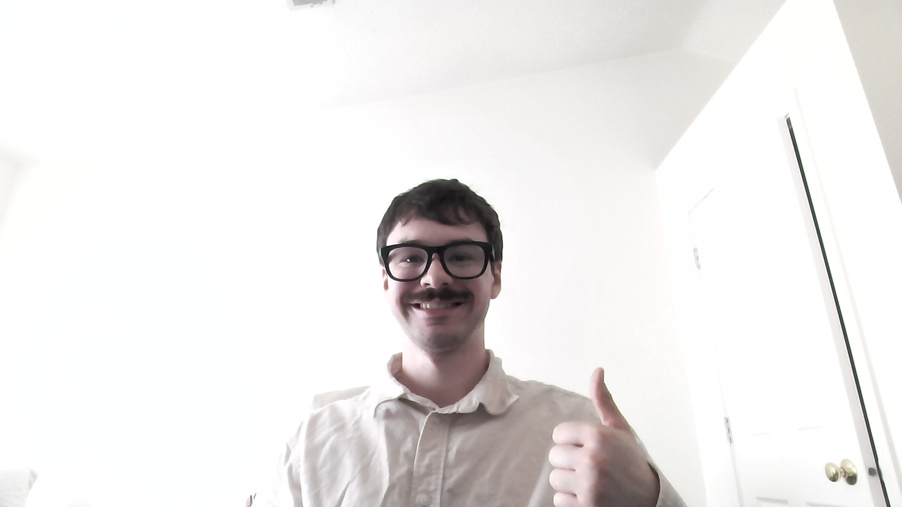
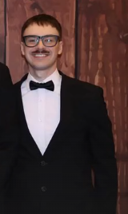
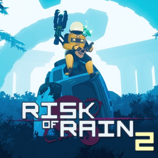

Who is he
What does he like

Hello, the guy you see on the right and top is David Arnold, me. I grew up in multiple states because my mother served in the Army and was sent to work at said states. I want to pursue a career similar to my mother's, while also earning a degree I want to have. I am currently in my second year at MSU, changing my major from CSE to this after a person in MSU ROTC told me about the Games and Interactive Media major. I enjoy being a student now and want to be some type of designer once I graduate.


This could be a simple sentence, but I really like this game. It is called “Risk of Rain 2.” It is a fast-paced roguelike shooter where a survivor crashes on a planet that was not there prior. The first thing you see when you load up the game is two of the unlockable survivors mentioning that there was a familiar signal from the planet. These survivors explore the alien planet and fight through waves of enemies while collecting items that make the survivor stronger. The main goal of the game is to find the spaceship that is emitting this signal. You survive through increasingly difficult stages, activating teleporters, defeating unique bosses, all while the game gets harder the longer you stay. With the stages and items being different every time you press start, every playthrough is a little different.